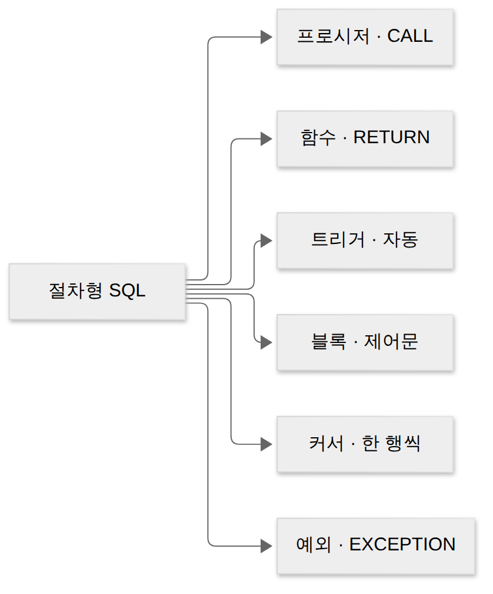
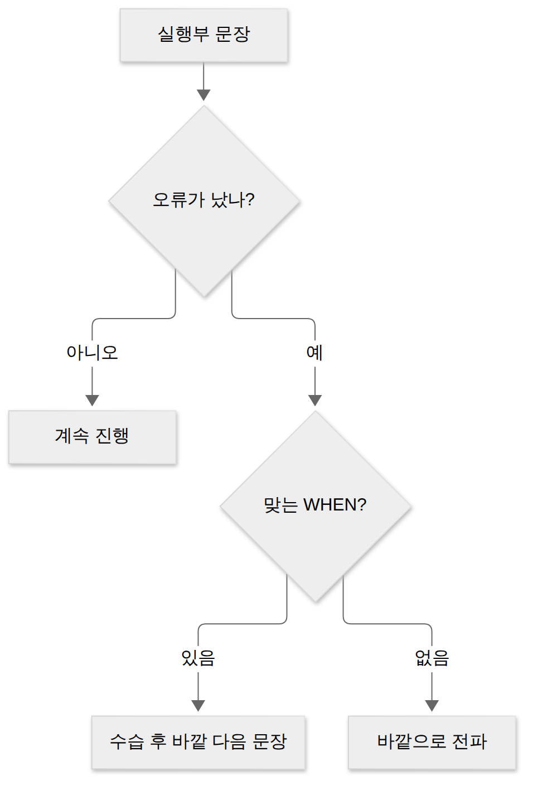

D038 · 절차형 SQL — 프로시저·함수·트리거, 블록·제어문·커서·예외 처리
B1 지난 D037까지 SQL로 “무엇을” 가져오고 고칠지 적는 법을 배웠어요. 오늘은 그 SQL에 변수 · 조건 · 반복 · 오류 처리를 더해 DB 안에 “어떻게, 어떤 순서로”까지 저장해 두는 절차형 SQL을 봐요. 예시는 가상의 간편 송금 스타트업 ‘모닥불 페이’의 계좌 표 하나로 끝까지 가요.
- 저장 프로시저 · 사용자 정의 함수 · 트리거를 “누가 실행시키나(호출 vs 자동) · 반환값 · SQL 안에서 쓸 수 있나”로 구별할 수 있다
- 트리거의 구성(이벤트 · 조건 · 동작, BEFORE/AFTER, 행/문장 단위)과 이벤트(사건) · 이벤트 스케줄러의 차이를 설명할 수 있다
- 절차형 SQL의 블록 구조(DECLARE · BEGIN · EXCEPTION · END)와 제어문(IF · CASE · LOOP · WHILE · FOR)을 읽을 수 있다
- 커서(OPEN → FETCH → CLOSE, 묵시적 · 명시적)와 예외 처리(WHEN … THEN, RAISE, SQLCODE · SQLERRM)가 각각 무엇을 해결하는지 설명할 수 있다
1부 (약 19분)
2부 (약 21분)
0. 기본 전제와 용어 사전
오늘 코드는 세 가지 DBMS 말투가 섞여 나와요. 시험 교재는 주로 Oracle의 PL/SQL 말투로 설명하고, 이 페이지의 실행 상자는 브라우저 안 PostgreSQL이라 PL/pgSQL 말투로 돌아가요. MySQL은 저장 루틴(stored routine)이라고 부르고 문법이 조금 달라요. 셋 다 “SQL에 절차를 더한 언어”라는 뼈대는 같으니, 아래 용어를 DBMS 이름 대신 개념 이름으로 기억하면 돼요.
| 용어 | 뜻 | 모닥불 페이 예 |
|---|---|---|
| 절차형 SQL | SQL에 변수 · 조건 · 반복 · 예외 처리를 더해 순서 있는 처리를 DB 안에서 실행하는 언어 | “송금 = 빼고 더하기, 실패하면 기록” 전체를 DB에 저장 |
| 블록 | DECLARE · BEGIN · EXCEPTION · END로 묶인 코드 한 덩어리 | 송금 프로시저의 본문 |
| 저장 프로시저 | 이름을 붙여 DB에 저장한 처리 묶음. CALL로 불러 실행 | CALL 송금('A1','A2',10000) |
| 사용자 정의 함수 | 값 하나를 RETURN으로 돌려주는 저장 코드. SQL 식 안에서 부름 | 수수료(잔액) → 500 |
| 트리거 | 데이터 변경 같은 사건이 일어나면 자동으로 실행되는 저장 코드 | 잔액이 바뀔 때마다 감사로그 기록 |
| 이벤트 | 시스템에서 일어난 사건(INSERT · UPDATE · DELETE 등). 트리거를 깨우는 계기 | “가람 잔액 UPDATE가 일어났다” |
| 커서 | 질의 결과를 한 행씩 가리키며 처리하게 해 주는 포인터 | 계좌 3행을 한 줄씩 읽기 |
| 예외 | 실행 중 일어난 오류. 예외부에서 잡아 처리할 수 있음 | 잔액이 음수가 되는 CHECK 위반 |
| OLD · NEW | 트리거 안에서 보는 “바뀌기 전 행 · 바뀐 뒤 행” | 50000 → 40000 |
:= | 절차형 SQL의 변수 대입 기호(비교의 = 와 구별) | 합 := 합 + 잔액 |
표에서 “저장”이라는 말이 계속 나오는 이유가 있어요. 오늘의 프로그램들은 한 번 만들면 DB의 객체(테이블 · 뷰 · 인덱스와 같은 급)로 남아, 이름으로 부르거나(프로시저 · 함수) 사건이 깨워서(트리거) 다시 실행돼요. 그래서 이 셋을 묶어 저장 객체라고도 해요.
1. 큰 그림 — SQL이 변수와 if를 얻으면
용어를 봤으니 이제 이게 왜 필요한지부터 봐요. SQL은 선언형 언어예요. UPDATE 계좌 SET 잔액 = 잔액 - 10000 WHERE 번호 = 'A1'처럼 원하는 결과만 적으면 DBMS가 방법을 알아서 골라요. 그런데 송금은 한 문장으로 끝나지 않아요. 보내는 쪽에서 빼고, 받는 쪽에 더하고, 잔액이 모자라면 멈추고, 그 사실을 기록해야 해요. 순서와 조건과 실패 처리가 있는 일이죠.
이걸 앱에서 하면 앱이 문장마다 DB에 다녀와야 하고, 같은 송금 규칙을 웹 · 앱 · 배치 프로그램마다 따로 구현하게 돼요. SQL은 “커피 한 잔 주세요”라는 주문서이고, 절차형 SQL은 “우유가 떨어졌으면 두유로, 그것도 없으면 점장님께”까지 적힌 바리스타 매뉴얼이에요. 매뉴얼을 가게(DB) 안에 붙여 두면 어느 손님(앱)이 와도 같은 순서로 처리돼요.
정의: 절차형 SQL 개념을 한 문장으로 말하면, 절차형 SQL은 일반 SQL에 변수 선언 · 조건문 · 반복문 · 예외 처리 같은 절차적 기능을 더해, 여러 SQL 문을 순서 있게 묶어 DBMS 안에서 실행하는 프로그래밍 언어예요. 대표적인 결과물이 세 가지예요 — 이름으로 부르는 저장 프로시저, 값을 돌려주는 사용자 정의 함수, 사건이 깨우는 트리거.

얻는 것과 잃는 것도 분명해요. 처리 로직이 DB 서버에서 돌아 네트워크 왕복이 줄고, 한 번 만든 규칙을 여러 앱이 재사용하며, 테이블 대신 프로시저 실행 권한만 줘서 접근을 통제할 수 있어요. 대신 DBMS마다 문법이 달라 다른 DB로 옮기기 어렵고(이식성), 앱 코드보다 디버깅 · 테스트 · 버전 관리가 불편하며, 로직이 DB 안에 숨어 “이 값 누가 바꿨지?”를 찾기 어려워질 수 있어요.
한 장 요약 — 위 두 문단을 일반 SQL과 나란히 놓으면 이래요.
| 구분 | 일반 SQL | 절차형 SQL |
|---|---|---|
| 말하는 것 | 무엇을(결과) | 무엇을 + 어떤 순서 · 조건 · 반복으로 |
| 단위 | 문장 하나 | 여러 문장을 묶은 블록 |
| 변수 · 제어문 | 없음 | DECLARE 변수, IF · CASE · LOOP |
| 오류가 나면 | 그 문장이 실패하고 끝 | EXCEPTION에서 잡아 수습 가능 |
| 장점 | 표준이라 어디서나 비슷 | 왕복 감소 · 재사용 · 권한 통제 |
| 대가 | 복잡한 업무 흐름은 앱이 맡아야 함 | 이식성 · 디버깅 · 버전 관리가 어려움 |
세 프로그램은 “누가 실행시키나”가 가장 크게 달라요. 아래 그림의 세 줄을 기억해 두면 오늘 나오는 함정 선지 대부분이 풀려요.
한 장 요약 — 세 객체를 가르는 질문 다섯 개예요. 각 칸은 장면 3~5에서 하나씩 자세히 풀어요.
| 가르는 질문 | 저장 프로시저 | 사용자 정의 함수 | 트리거 |
|---|---|---|---|
| 누가 실행시키나 | 사용자 · 앱이 호출 | 사용자 · 앱이 호출 | 사건(INSERT · UPDATE · DELETE)이 자동으로 |
| 부르는 문법 | CALL / EXECUTE | SELECT · WHERE 등 식 안 | 부르는 문장 없음 |
| 반환값 | 필수 아님(OUT 매개변수로 넘길 수는 있음) | RETURN으로 값 하나 필수 | 호출자에게 돌려주는 값 없음 |
| SQL 문 안에서 쓰나 | 못 씀 | 씀 | 해당 없음 |
| 대표 용도 | 송금 같은 업무 처리 묶음 | 계산 · 변환(수수료, 등급) | 무결성 유지 · 감사 로그 · 알림 |
오늘의 무대를 소개할게요. 모닥불 페이의 계좌 표 3행, 그리고 기록용 빈 표 두 개(감사로그 · 작업로그)예요. 잔액에는 “0 이상”이라는 CHECK 제약이 걸려 있어요. 이 제약이 장면 8에서 일부러 사고를 내는 재료가 돼요.
| 번호 | 이름 | 잔액 |
|---|---|---|
| A1 | 가람 | 50000 |
| A2 | 나래 | 20000 |
| A3 | 다솜 | 8000 |
→ 이 장면의 결과물: 절차형 SQL이 왜 있고, 무엇을 만드는지(프로시저 · 함수 · 트리거)의 큰 그림. 그래서 다음 장면은 이 셋이 공통으로 쓰는 뼈대, 블록부터 봐요.
2. 장면 1 — 코드 한 덩어리의 네 칸 (절차형 SQL 블록 구조)
앞 장면에서 절차형 SQL이 “여러 문장을 묶는다”고 했죠. 그 묶음의 틀이 절차형 SQL 블록 구조예요. 정의: 블록은 변수를 준비하는 선언부, 실제 일을 하는 실행부, 오류를 수습하는 예외부를 하나로 감싼 코드 단위예요. 프로시저 · 함수 · 트리거의 본문이 모두 이 블록 하나예요.
세 칸은 하는 일이 분명히 나뉘어요. 선언부(DECLARE)에는 이 블록에서 쓸 변수 · 상수 · 커서 · 사용자 정의 예외의 이름과 타입을 적어요. 실행부(BEGIN … )에는 SQL 문, 변수 대입, IF · LOOP 같은 제어문이 들어가며 블록에서 유일하게 빠질 수 없는 칸이에요. 예외부(EXCEPTION … )는 실행부에서 오류가 났을 때만 실행되는 칸이고, 마지막 END가 블록을 닫아요.
이사 박스로 생각하면 쉬워요. 겉에 내용물 목록(DECLARE)을 붙이고, 열어서 꺼내 쓰고(BEGIN), 깨졌을 때 연락할 곳(EXCEPTION)을 적어 둔 다음 테이프(END)로 닫는 거예요. 목록과 연락처는 생략해도 박스는 되지만, 내용물 없는 박스는 의미가 없죠.
DECLARE -- 선언부: 변수 준비
합 INT := 0; -- := 는 대입
BEGIN -- 실행부(필수)
SELECT SUM(잔액) INTO 합 FROM 계좌;
IF 합 > 0 THEN … END IF;
EXCEPTION -- 예외부(선택)
WHEN OTHERS THEN …;
END; -- 블록 끝변수 대입은 :=를 써요. SQL에서 =는 “같은가?”를 묻는 비교라서, “왼쪽 변수에 오른쪽 값을 넣어라”는 다른 기호로 구별한 거예요. 질의 결과를 변수에 담을 때는 SELECT … INTO 변수를 써요. 블록 안에 블록을 또 넣을 수도 있는데(하위 블록), 안쪽에서 바깥과 같은 이름의 변수를 선언하면 안쪽에서는 안쪽 변수가 바깥 변수를 가려요.
먼저 예상해 보세요 — 반복문으로 세 계좌 잔액을 더하면 합계는 얼마일까요? (DO는 PostgreSQL에서 이름 없는 블록을 한 번 실행하는 명령이에요.)
결과는 합계 78000 한 줄이에요. 변수 합은 블록이 끝나면 사라지기 때문에, 값을 남기려고 작업로그 표에 넣고 꺼내 봤어요. 다음 상자는 하위 블록이 바깥 변수를 가리는 모습이에요.
BEGIN … END는 문장을 묶는 괄호일 뿐, 트랜잭션의 시작 · 끝이 아니에요. SQL의 BEGIN;(트랜잭션 시작)과 이름만 같아요. “END를 만나면 자동으로 COMMIT된다”는 문장이 보이면 의심하세요.→ 이 장면의 결과물: 블록의 틀과 변수 대입. 그런데 실행부가 위에서 아래로 한 줄씩만 흐르면 “잔액에 따라 다르게”는 못 하죠. 다음 장면은 흐름을 바꾸는 제어문이에요.
3. 장면 2 — 길 고르기와 되풀이 (제어문 IF · CASE · LOOP)
블록 안 문장은 기본적으로 위에서 아래로 한 번씩 실행돼요. 정의: 제어문은 이 순서를 바꾸는 문장으로, 조건에 맞는 길 하나를 고르는 조건문과 조건이 만족되는 동안 되풀이하는 반복문으로 나뉘어요. 현업 언어의 if · switch · for · while과 같은 역할이라 개념은 익숙하고, 시험에서는 철자와 끝맺음 방식을 구별하면 돼요.
IF — 위에서부터 차례로 묻기
정의: IF 문은 조건이 참일 때만 그 아래 문장을 실행해요. IF 조건 THEN … ELSIF 조건 THEN … ELSE … END IF; 꼴이고, 위에서부터 차례로 물어 처음 참이 된 곳 하나만 실행한 뒤 END IF 밖으로 나가요. 그래서 조건의 순서가 결과를 바꿔요. 모닥불 페이가 잔액으로 등급을 매긴다면 이렇게 돼요.
END IF; — 띄어 써요.CASE — 값을 보고 갈래 고르기
정의: CASE는 여러 갈래 중 하나를 골라 값을 정하거나 문장을 실행하는 구문이에요. CASE 변수 WHEN 값1 THEN … 처럼 한 값과 비교하는 꼴과, CASE WHEN 조건1 THEN …처럼 조건을 차례로 묻는 꼴이 있어요. 일반 SQL의 SELECT 안에서도 쓸 수 있다는 점이 IF와 달라요. 위 사다리 그림을 SELECT 하나로 옮기면 이래요.
가람 상 · 나래 중 · 다솜 하가 나와요. 두 WHEN의 순서를 바꿔 보면 가람도 ‘중’이 돼요(30000 이상이면 10000 이상이기도 하니까). 처음 맞은 갈래에서 멈춘다는 규칙을 직접 확인할 수 있어요.
LOOP · WHILE · FOR — 되풀이하기
정의: 반복문은 같은 문장들을 여러 번 실행하는 구문이에요. 세 종류는 “언제 멈출지를 어디서 묻는가”로 구별해요. LOOP는 스스로 멈추지 않아 안에서 EXIT WHEN 조건으로 빠져나와야 하고, WHILE은 매 바퀴 시작 전에 조건을 물어 거짓이면 끝내며, FOR는 숫자 범위(1..10)나 질의 결과 행만큼 돌아 횟수가 미리 정해져 있어요. CONTINUE는 이번 바퀴만 건너뛰고 다음 바퀴로 가요.
예를 들어 다솜의 8000원에 매달 10% 이자가 붙는다면 몇 달 뒤 1만 원을 넘을까요? “넘을 때까지”라서 횟수를 모르니 WHILE이 어울려요. 먼저 예상해 보고 실행해 보세요.
3달 뒤 10648원이 나와요. 8800, 9680까지는 1만 원 미만이라 계속 돌고, 세 번째 바퀴 후 10648이 되자 다음 검사에서 조건이 거짓이 돼 멈춰요. 앞 장면의 합계 예시는 계좌 행만큼 도는 FOR였어요.
| 제어문 | 언제 쓰나 | 어떻게 끝나나 |
|---|---|---|
| IF … ELSIF … ELSE | 조건 몇 개 중 하나를 골라 문장 실행 | 처음 참인 갈래 실행 후 END IF 밖으로 |
| CASE | 값 · 조건으로 갈래 고르기, SELECT 안에서도 | 처음 맞는 WHEN에서 결정, 없으면 ELSE |
| LOOP … END LOOP | 멈출 지점이 중간에 있을 때 | EXIT (WHEN 조건)으로만 |
| WHILE 조건 LOOP | “~하는 동안” 반복, 횟수 모름 | 바퀴 시작 전 조건이 거짓이면 |
| FOR i IN 1..n / FOR r IN 질의 | 횟수 · 행 수가 정해진 반복 | 범위 · 행을 다 돌면 |
→ 이 장면의 결과물: 블록 안에서 길을 고르고 되풀이하는 법. 이제 이 재료로 만든 첫 번째 프로그램, 이름을 붙여 저장해 두고 불러 쓰는 저장 프로시저를 볼 차례예요.
4. 장면 3 — 송금 매뉴얼에 이름 붙이기 (저장 프로시저)
앞 두 장면에서 블록과 제어문을 익혔으니, 이제 그 블록에 이름을 붙여 저장할 수 있어요. 정의: 저장 프로시저(Stored Procedure)는 일련의 SQL 처리를 하나의 이름으로 DB에 저장해 두고, 필요할 때 호출해서 실행하는 절차형 SQL이에요. 호출은 CALL 프로시저명(인자)(Oracle은 EXECUTE, SQL Server는 EXEC)으로 해요.
왜 이렇게까지 할까요? 그림처럼 앱이 문장을 하나씩 보내면 문장마다 네트워크를 다녀와야 해요. 프로시저로 묶으면 앱은 “송금해 줘” 한 마디만 하고 나머지는 DB 안에서 처리돼요. 편의점 마감 매뉴얼과 같아요 — 아르바이트생은 “마감”만 외치면 시재 확인 · 조명 끄기 · 문 잠그기가 순서대로 진행되고, 세부 순서가 바뀌어도 매뉴얼 한 장만 고치면 돼요.
CREATE PROCEDURE 송금(보내는 TEXT, 받는 TEXT, 금액 INT)
LANGUAGE plpgsql AS $$
BEGIN
UPDATE 계좌 SET 잔액 = 잔액 - 금액 WHERE 번호 = 보내는;
UPDATE 계좌 SET 잔액 = 잔액 + 금액 WHERE 번호 = 받는;
END $$;
CALL 송금('A1', 'A2', 10000);괄호 안 매개변수에는 방향이 있어요. IN은 호출한 쪽이 값을 넣어 주는 입력(기본값), OUT은 프로시저가 값을 채워 돌려주는 출력, INOUT은 넣은 값을 고쳐서 돌려주는 양방향이에요. 그러니 프로시저도 OUT 매개변수로 결과를 넘길 수는 있어요. 다만 함수처럼 “RETURN으로 값 하나를 반드시 돌려준다”는 의무는 없어요 — 이게 시험이 말하는 “반환값이 필수가 아니다”의 뜻이에요.
먼저 예상해 보세요 — CALL 한 번 뒤 가람과 나래의 잔액은 얼마일까요?
가람 40000 · 나래 30000 · 다솜 8000이에요. 아래 애니메이션으로 CALL 한 줄 안에서 무슨 일이 일어났는지 천천히 따라가 봐요.
| 번호 | 이름 | 잔액 |
|---|---|---|
| A1 | 가람 | 50000 |
| A2 | 나래 | 20000 |
| A3 | 다솜 | 8000 |
CALL 송금('A1', 'A2', 10000);
① 앱이 보낸 것은 이 한 줄뿐이에요. 어떤 UPDATE를 몇 번 하는지는 앱이 몰라요.
| 번호 | 이름 | 잔액 |
|---|---|---|
| A1 | 가람 | 50000 |
| A2 | 나래 | 20000 |
| A3 | 다솜 | 8000 |
② DB 안에서 프로시저 본문이 시작돼요. 매개변수 보내는 = A1, 받는 = A2, 금액 = 10000이 채워져요.
| 번호 | 이름 | 잔액 |
|---|---|---|
| A1 | 가람 | 40000 |
| A2 | 나래 | 20000 |
| A3 | 다솜 | 8000 |
③ 첫 번째 UPDATE — 가람 50000 → 40000.
| 번호 | 이름 | 잔액 |
|---|---|---|
| A1 | 가람 | 40000 |
| A2 | 나래 | 30000 |
| A3 | 다솜 | 8000 |
④ 두 번째 UPDATE — 나래 20000 → 30000. 이 사이에 앱과 DB는 한마디도 주고받지 않았어요.
| 번호 | 이름 | 잔액 |
|---|---|---|
| A1 | 가람 | 40000 |
| A2 | 나래 | 30000 |
| A3 | 다솜 | 8000 |
CALL 완료
⑤ 완료 신호 한 번이 앱으로 돌아가요. 돌려준 “값”은 없어요 — 프로시저는 일을 하는 쪽이에요.
OUT 매개변수로 값을 받아 오는 모습도 확인해 봐요. PostgreSQL에서는 OUT 자리에 NULL을 넣어 두면 CALL 결과로 그 값이 한 행으로 돌아와요.
남은돈 = 20000이 나와요. RETURN 없이 OUT 매개변수로 값을 넘긴 거예요. 이제 일부러 틀려 볼게요. 프로시저를 함수처럼 SELECT 안에서 부르면 어떻게 될까요?
“송금(…) is a procedure” 오류가 나요. 프로시저는 CALL로만 부를 수 있고, 값이 들어갈 자리(SELECT 목록 · WHERE)에는 못 들어가요. 거꾸로 함수를 CALL하면 “is not a procedure” 오류가 나는데, 그건 다음 장면에서 확인해요.
→ 이 장면의 결과물: 송금 업무를 CALL 한 번으로 실행하는 프로시저. 그런데 “잔액마다 수수료를 계산해 결과표에 열로 붙이기”는 CALL로 못 해요. 값을 돌려주며 SQL 안에 들어가는 함수가 필요해요.
5. 장면 4 — 넣으면 반드시 나오는 자판기 (사용자 정의 함수)
앞 장면의 프로시저는 “일을 하는” 쪽이었어요. 정의: 사용자 정의 함수(User-Defined Function)는 사용자가 직접 만든 함수로, 입력을 받아 처리한 뒤 RETURN 문으로 단일 값을 반드시 돌려주는 절차형 SQL이에요. SUM · UPPER 같은 내장 함수와 같은 자리, 즉 SQL 식 안에서 쓰여요.
자판기를 떠올리면 돼요. 동전(인자)을 넣으면 반드시 음료(반환값) 하나가 나와야 하고, 아무것도 안 나오면 고장이에요. 함수도 RETURN 없이 끝나면 오류가 나요. 값이 하나 나온다는 약속이 있으니 결과표의 한 칸에 그 값을 넣을 수 있는 거예요.
CREATE FUNCTION 수수료(금액 INT) RETURNS INT -- 돌려줄 값의 타입
LANGUAGE plpgsql AS $$
BEGIN
RETURN 금액 / 100; -- 반드시 RETURN
END $$;먼저 예상해 보세요 — 잔액의 1%를 수수료로 하면 세 사람은 각각 얼마일까요? 함수를 열 이름처럼 SELECT 목록에 넣어 봐요.
500 · 200 · 80이 나와요. 함수는 행마다 한 번씩 불려 그 행의 칸을 채워요. WHERE 안에도 들어가요 — WHERE 수수료(잔액) >= 200을 붙이면 가람과 나래만 남아요. 아래 그림이 그 모양이에요.
이번엔 RETURN을 깜빡한 함수예요. 양수일 때만 RETURN하도록 짰는데 음수를 넣으면 어떻게 될까요?
“control reached end of function without RETURN” — RETURN 없이 함수 끝에 닿았다는 오류예요. 자판기가 동전만 먹은 셈이죠. 마지막으로, 함수를 프로시저처럼 CALL하면요?
“수수료(integer) is not a procedure” 오류예요. 함수는 값이 필요한 자리에서 부르는 것이지 CALL로 실행하는 것이 아니에요. 두 장면을 나란히 놓으면 이래요.
→ 이 장면의 결과물: 값을 돌려주는 함수와, 일을 하는 프로시저의 구별. 둘 다 누군가 “불러야” 실행돼요. 다음 장면의 주인공은 아무도 부르지 않았는데 실행되는 트리거예요.
6. 장면 5 — 아무도 안 눌렀는데 켜지는 불 (트리거)
앞의 두 프로그램은 호출문이 있어야 움직였어요. 그런데 “잔액이 바뀔 때마다 반드시 감사 기록을 남겨라”는 규칙은 어떨까요? 앱 개발자가 송금 코드에 기록 코드를 넣는 걸 한 번이라도 잊으면 기록이 빠져요. 정의: 트리거(Trigger)는 특정 테이블에 삽입 · 갱신 · 삭제 같은 이벤트가 발생할 때마다 DBMS가 자동으로 실행하는 절차형 SQL이에요. 누가 어떤 경로로 데이터를 바꾸든, 사건만 일어나면 실행돼요.
현관 센서등과 같아요. 문을 열면(사건) 아무도 스위치를 누르지 않았는데 불이 켜져요. 그래서 트리거에는 “부르는 문장”이 없고, 부른 사람이 없으니 결과값을 돌려받을 사람도 없어요. 이 한 문장이 오늘 가장 중요한 함정과 연결돼요.
트리거의 구성 — 이벤트 · 조건 · 동작
트리거 하나는 세 칸으로 정의해요. 이벤트는 트리거를 깨우는 사건으로, 어느 테이블의 INSERT · UPDATE · DELETE인지 정해요(SELECT에는 트리거를 만들 수 없어요). 조건은 사건이 일어났을 때 실제로 실행할지 거르는 선택 항목이에요(WHEN 절). 동작은 조건이 맞으면 실행하는 처리 내용이에요.
그림 아래 줄은 실행 시점이에요. BEFORE 트리거는 행이 실제로 바뀌기 전에 실행되어 새 값을 검사하거나 고치고, 문제가 있으면 오류를 내 변경 자체를 막을 수 있어요. AFTER 트리거는 변경이 끝난 뒤 실행되어 감사 로그 기록 · 다른 표 갱신 · 알림처럼 “바뀐 결과를 보고 하는 일”에 써요. 뷰에는 INSTEAD OF 트리거를 달아 원래 작업 대신 다른 처리를 하게 할 수 있는데, D037에서 본 “갱신 불가 뷰”를 우회하는 방법이에요.
트리거 안에서는 바뀌기 전 행을 OLD, 바뀐 뒤 행을 NEW라는 이름으로 볼 수 있어요(Oracle은 :OLD · :NEW). INSERT에는 이전 행이 없으니 NEW만, DELETE에는 새 행이 없으니 OLD만, UPDATE에는 둘 다 있어요.
CREATE TRIGGER 트리거명
{BEFORE | AFTER | INSTEAD OF} {INSERT | UPDATE | DELETE} ON 테이블
[FOR EACH ROW] -- 행 단위 (생략하면 문장 단위)
[WHEN (조건)]
동작; -- Oracle: BEGIN … END; / PostgreSQL: EXECUTE FUNCTION 함수()행 단위와 문장 단위
트리거가 몇 번 실행되는지도 정해야 해요. 행 단위 트리거(FOR EACH ROW)는 문장이 바꾼 행마다 한 번씩 실행돼 OLD · NEW로 각 행을 볼 수 있어요. 문장 단위 트리거(FOR EACH STATEMENT, 기본값)는 몇 행을 바꾸든 문장 하나에 한 번만 실행되고, 0행을 바꾼 문장에도 한 번 실행돼요. 행마다 감사 기록을 남기려면 행 단위, “누가 언제 이 표를 건드렸다” 한 줄이면 문장 단위가 맞아요.
먼저 예상해 보세요 — 3행을 바꾸는 UPDATE 한 번에 행 단위 · 문장 단위 트리거가 하나씩 걸려 있으면 작업로그는 몇 줄일까요?
행 단위 3줄(가람 · 나래 · 다솜) + 문장 단위 1줄 = 4줄이에요. UPDATE 문에는 트리거 이름이 한 번도 나오지 않았다는 점을 다시 보세요.
감사 로그 트리거 만들기
이제 모닥불 페이의 진짜 규칙을 만들어요. 잔액이 실제로 바뀐 행마다 (계좌, 전 잔액, 후 잔액)을 감사로그에 남기는 AFTER 행 트리거예요. 송금 프로시저는 장면 3 그대로이고, 감사 코드는 한 줄도 넣지 않았어요. 먼저 예상해 보세요 — 송금 두 번이면 감사로그는 몇 줄일까요?
송금 한 번에 UPDATE가 두 번(보내는 쪽 · 받는 쪽)이니 2줄씩, 모두 4줄이에요(A1 50000→40000, A2 20000→30000, A2 30000→25000, A3 8000→13000). 송금 코드를 누가 어떻게 고쳐도 잔액이 바뀌는 한 기록은 빠지지 않아요. 아래 애니메이션은 UPDATE 한 번 안에서 BEFORE · AFTER 트리거가 끼어드는 순서예요.
| 번호 | 이름 | 잔액 |
|---|---|---|
| A1 | 가람 | 50000 |
| A2 | 나래 | 20000 |
| A3 | 다솜 | 8000 |
UPDATE 계좌 SET 잔액 = 잔액 - 10000 WHERE 번호 = 'A1';
| 번호 | 계좌 | 전잔액 | 후잔액 |
|---|
① 누군가 가람 계좌에서 1만 원을 빼는 UPDATE를 보냈어요. 이 문장 어디에도 트리거 이름은 없어요.
| 번호 | 이름 | 잔액 |
|---|---|---|
| A1 | 가람 | 50000 |
| A2 | 나래 | 20000 |
| A3 | 다솜 | 8000 |
OLD.잔액 = 50000 · NEW.잔액 = 40000 → 0 이상이라 통과
| 번호 | 계좌 | 전잔액 | 후잔액 |
|---|
② BEFORE 행 트리거(잔액 검사)가 먼저 깨어나 새 값(NEW)을 봐요. 여기서 오류를 내면 행은 바뀌지 않아요.
| 번호 | 이름 | 잔액 |
|---|---|---|
| A1 | 가람 | 40000 |
| A2 | 나래 | 20000 |
| A3 | 다솜 | 8000 |
| 번호 | 계좌 | 전잔액 | 후잔액 |
|---|
③ 실제로 행이 바뀌어요. 바뀌기 전 값은 OLD, 바뀐 뒤 값은 NEW라는 이름으로 트리거가 볼 수 있어요.
| 번호 | 이름 | 잔액 |
|---|---|---|
| A1 | 가람 | 40000 |
| A2 | 나래 | 20000 |
| A3 | 다솜 | 8000 |
| 번호 | 계좌 | 전잔액 | 후잔액 |
|---|---|---|---|
| 1 | A1 | 50000 | 40000 |
④ AFTER 행 트리거(잔액 감사)가 깨어나 감사로그에 (A1, 50000, 40000)을 남겨요.
| 번호 | 이름 | 잔액 |
|---|---|---|
| A1 | 가람 | 40000 |
| A2 | 나래 | 20000 |
| A3 | 다솜 | 8000 |
| 번호 | 계좌 | 전잔액 | 후잔액 |
|---|---|---|---|
| 1 | A1 | 50000 | 40000 |
결과: UPDATE 1
⑤ 보낸 사람이 받는 대답은 “1행 바뀜”뿐이에요. 감사로그가 늘어난 건 트리거가 조용히 한 일이에요.
BEFORE 트리거는 문지기 역할도 해요. 새 잔액이 음수면 오류를 내서 변경을 막는 트리거를 만들고, 다솜에게서 999999원을 빼 봐요. 다솜 잔액은 어떻게 될까요?
“잔액 부족: -991999” 오류가 나고 UPDATE 전체가 취소돼 다솜은 8000원 그대로예요. 트리거는 이렇게 무결성 유지(규칙 위반 막기), 감사 로그(변경 이력), 파생 데이터 갱신(합계 표 맞추기), 알림 · 메시지 출력에 쓰여요.
트리거의 반환값 — 시험과 실제
여기서 RETURN이 보여서 헷갈릴 수 있어요. PostgreSQL은 트리거가 별도의 “트리거 함수”를 실행하는 구조라 그 함수 안에 RETURN NEW나 RETURN NULL이 있어요. 하지만 이건 DBMS에게 “이 행을 그대로 진행해라 / 건너뛰어라”를 알리는 내부 신호이고, AFTER 트리거와 문장 단위 트리거의 반환값은 아예 무시돼요. Oracle · MySQL의 트리거 본문에는 RETURN이 없어요.
트리거가 만능은 아니에요. 실행이 눈에 보이지 않아 “UPDATE 한 줄이 왜 이렇게 느리지?”나 “이 행은 누가 넣었지?”를 추적하기 어렵고, 트리거가 다른 표를 바꾸고 그 표의 트리거가 또 깨어나는 연쇄가 생길 수 있어요. 트랜잭션 제어(COMMIT · ROLLBACK)도 DBMS마다 제약이 있어 Oracle은 트리거 안에서 이를 제한하는 것으로 알려져 있어요. 그래서 꼭 DB가 지켜야 하는 규칙에만 쓰는 게 좋아요.
→ 이 장면의 결과물: 사건이 깨우는 트리거, 그리고 감사로그 4줄. 그런데 계속 나온 “이벤트”라는 말은 정확히 뭘까요? 다음 장면에서 이벤트와, 사건 대신 시계가 깨우는 이벤트 스케줄러를 구별해요.
7. 장면 6 — 비가 왔다 vs 빨래를 걷는다 vs 아침 알람 (이벤트)
앞 장면에서 트리거를 “이벤트가 발생할 때마다 실행”이라고 정의했어요. 정의: 이벤트(Event)는 시스템에서 일어난 어떤 사건, 예를 들어 행 삽입 · 수정 · 삭제, 로그인, 테이블 생성 같은 일 그 자체예요. 비유하면 이벤트는 “비가 왔다”는 사실이고, 트리거는 “비가 오면 빨래를 걷는 사람”이에요. 시험에서 “시스템에 어떤 일이 발생한 것”이라는 선지는 트리거가 아니라 이벤트의 설명이에요.
그런데 MySQL에는 이름에 이벤트가 들어간 기능이 하나 더 있어요. 이벤트 스케줄러는 CREATE EVENT로 정해진 시각에 한 번(AT) 또는 일정 주기마다(EVERY) SQL을 자동 실행해요. 리눅스의 cron을 DB 안에 넣은 셈이고, 비와 상관없이 매일 아침 울리는 알람이에요. 트리거와 둘 다 “사람이 안 불러도 실행된다”는 공통점이 있지만, 깨우는 것이 데이터 사건이냐 시계냐가 달라요.
-- MySQL/MariaDB: 매달 말 이자 지급 (이 페이지의 실행 상자에서는 지원하지 않는 문법)
CREATE EVENT 월말이자
ON SCHEDULE EVERY 1 MONTH STARTS '2026-11-30 23:59:00'
DO
UPDATE 계좌 SET 잔액 = 잔액 + 잔액 / 1000;→ 이 장면의 결과물: 사건(이벤트) · 사건에 반응하는 프로그램(트리거) · 시계에 반응하는 기능(스케줄러)의 구별. 지금까지의 처리는 UPDATE 한 문장이 여러 행을 한꺼번에 바꾸는 집합 단위였어요. 다음 장면은 결과를 한 행씩 꺼내 다르게 다루는 커서예요.
8. 장면 7 — 장부를 손가락으로 짚으며 읽기 (커서)
SQL은 집합 단위로 일해요. SELECT는 결과 전체를 한 번에 돌려주죠. 그런데 절차형 SQL의 변수는 한 번에 한 행의 값만 담을 수 있어서, 결과가 여러 행이면 “한 행 꺼내고 → 처리하고 → 다음 행”이 필요해요. 정의: 커서(Cursor)는 질의 결과 집합에서 현재 처리할 행의 위치를 가리키는 포인터로, 여러 행의 결과를 한 행씩 순서대로 처리할 수 있게 해 줘요. 줄 쳐진 장부를 손가락으로 짚으며 한 줄씩 읽는 것과 같아요.
묵시적 커서와 명시적 커서
묵시적(암시적) 커서는 DBMS가 SQL 문을 실행할 때마다 알아서 만들고 닫는 커서예요. 이름을 붙이지 않고, 방금 실행한 문장의 결과 정보를 속성으로 알려 줘요 — Oracle의 SQL%ROWCOUNT(영향받은 행 수) · SQL%FOUND · SQL%NOTFOUND(행이 있었나) · SQL%ISOPEN(문장이 끝나면 이미 닫혀 늘 거짓)이 그거예요. 명시적 커서는 개발자가 이름을 붙여 선언하고 직접 열고 · 읽고 · 닫는 커서로, 여러 행을 돌며 처리할 때 써요.
| 구분 | 묵시적 커서 | 명시적 커서 |
|---|---|---|
| 누가 만드나 | DBMS가 SQL 문마다 자동 | 개발자가 DECLARE에서 이름 붙여 선언 |
| 여닫기 | 자동(문장이 끝나면 닫힘) | OPEN · CLOSE를 직접 |
| 주 용도 | DML 결과 확인(몇 행 바뀌었나) | 여러 행 결과를 한 행씩 처리 |
| 확인 방법 | SQL%ROWCOUNT · SQL%FOUND 등 | 커서명%FOUND · %NOTFOUND · %ROWCOUNT |
명시적 커서는 네 단계로 써요. 그림과 애니메이션으로 손가락이 움직이는 모습을 보세요.
② OPEN — 질의를 실행해 결과 집합을 준비, 손가락은 첫 행 앞
③ FETCH — 현재 행을 변수에 꺼내고 다음 행으로 이동, 반복. 더 꺼낼 행이 없으면 NOT FOUND로 반복 종료
④ CLOSE — 결과 집합과 자원을 반납
c CURSOR FOR SELECT 이름, 잔액 FROM 계좌 ORDER BY 번호;
아직 아무것도 실행되지 않았어요.
① 선언(DECLARE): 커서에 질의를 붙여 이름만 지어 둬요.
| 손가락 | 이름 | 잔액 |
|---|---|---|
| 가람 | 50000 | |
| 나래 | 20000 | |
| 다솜 | 8000 |
| 순번 | 내용 |
|---|
② OPEN: 질의가 실행되고 결과 3행이 준비돼요. 손가락은 첫 행 앞에 있어요.
| 손가락 | 이름 | 잔액 |
|---|---|---|
| 👉 | 가람 | 50000 |
| 나래 | 20000 | |
| 다솜 | 8000 |
| 순번 | 내용 |
|---|---|
| 1 | 부자 가람 |
③ FETCH 1 → 가람 50000. 2만 원 이상이라 작업로그에 기록.
| 손가락 | 이름 | 잔액 |
|---|---|---|
| 가람 | 50000 | |
| 👉 | 나래 | 20000 |
| 다솜 | 8000 |
| 순번 | 내용 |
|---|---|
| 1 | 부자 가람 |
| 2 | 부자 나래 |
④ FETCH 2 → 나래 20000. 역시 기록.
| 손가락 | 이름 | 잔액 |
|---|---|---|
| 가람 | 50000 | |
| 나래 | 20000 | |
| 👉 | 다솜 | 8000 |
| 순번 | 내용 |
|---|---|
| 1 | 부자 가람 |
| 2 | 부자 나래 |
⑤ FETCH 3 → 다솜 8000. 조건(IF)에 안 맞아 기록하지 않아요.
| 손가락 | 이름 | 잔액 |
|---|---|---|
| 가람 | 50000 | |
| 나래 | 20000 | |
| 다솜 | 8000 |
FETCH 4 → 꺼낼 행 없음 (FOUND = 거짓)
⑥ 네 번째 FETCH는 빈손이에요. EXIT WHEN NOT FOUND가 반복을 끝내요.
CLOSE c; — 결과 집합을 반납했어요.
| 순번 | 내용 |
|---|---|
| 1 | 부자 가람 |
| 2 | 부자 나래 |
⑦ CLOSE: 커서가 잡고 있던 자원을 돌려줘요. 남은 건 작업로그 2행.
애니메이션을 실제 코드로 옮겨 실행해 봐요. 먼저 예상해 보세요 — 2만 원 이상인 사람만 기록하면 작업로그는 몇 줄일까요?
FETCH는 4번(마지막은 빈손), 기록은 ‘부자 가람’ · ‘부자 나래’ 2줄이에요. 오늘 배운 블록 · 제어문(LOOP · IF · EXIT) · 프로시저가 한 상자에 다 들어 있어요. Oracle 말투로 쓰면 아래와 같고, 끝 판정을 c%NOTFOUND로 해요.
DECLARE
CURSOR c IS SELECT 이름, 잔액 FROM 계좌;
v_이름 계좌.이름%TYPE;
v_잔액 계좌.잔액%TYPE;
BEGIN
OPEN c;
LOOP
FETCH c INTO v_이름, v_잔액;
EXIT WHEN c%NOTFOUND;
-- 한 행 처리
END LOOP;
CLOSE c;
END;묵시적 커서도 확인해 봐요. UPDATE가 몇 행을 바꿨는지 PostgreSQL에서는 GET DIAGNOSTICS 변수 = ROW_COUNT로 받아요(Oracle의 SQL%ROWCOUNT와 같은 역할). 잔액 3만 원 미만에 1원씩 더하면 몇 행일까요?
갱신 2행(나래 · 다솜)이에요. 커서를 선언하지 않았지만 DBMS가 UPDATE에 쓴 묵시적 커서의 결과를 알려 준 거예요.
INSERT INTO 작업로그(내용) SELECT '부자 ' || 이름 FROM 계좌 WHERE 잔액 >= 20000; 한 줄로 돼요. 집합 SQL로 되는 일은 집합 SQL로, 행마다 다른 처리가 꼭 필요할 때만 커서로. 그리고 다 읽었으면 CLOSE — 장부를 펼쳐 둔 채 퇴근하지 않기.→ 이 장면의 결과물: 결과를 한 행씩 처리하는 커서와 그 네 단계. 지금까지는 모든 문장이 잘 돌았어요. 마지막 장면은 중간에 오류가 났을 때 어떻게 수습하는지예요.
9. 장면 8 — 떨어져도 그물이 있으면 (오류 처리 · 예외)
앞 장면들의 송금은 늘 성공했어요. 하지만 현실에선 잔액이 모자라고, 없는 계좌를 찾고, 0으로 나누기도 해요. 정의: 예외(Exception)는 절차형 SQL 실행 중 일어난 오류이고, 예외 처리는 그 오류를 블록의 예외부(EXCEPTION)에서 잡아 대신할 동작을 실행하는 기능이에요. 예외 처리가 없으면 오류 하나에 프로그램 전체가 멈추고, 있으면 기록을 남기거나 다른 길로 돌아갈 수 있어요.
서커스의 안전망과 같아요. 그물이 있으면 곡예사가 떨어져도 공연이 이어지고, 그물이 없으면 바닥(호출한 쪽)까지 그대로 떨어져요. 아래 흐름이 그 규칙이에요.

예외부는 WHEN 예외이름 THEN 처리를 여러 개 나열하고, 마지막에 WHEN OTHERS THEN으로 나머지 모든 예외를 받을 수 있어요. 오류가 나면 실행부의 남은 문장은 건너뛰고, 위에서부터 맞는 WHEN 하나만 실행한 뒤 그 블록을 끝내고 바깥 블록의 다음 문장으로 가요. 맞는 처리기가 없으면 오류가 바깥 블록으로 전파되고, 끝까지 아무도 안 잡으면 호출한 쪽이 오류를 받아요.
-- Oracle PL/SQL
DECLARE
v_이름 계좌.이름%TYPE;
BEGIN
SELECT 이름 INTO v_이름 FROM 계좌 WHERE 번호 = 'A9';
EXCEPTION
WHEN NO_DATA_FOUND THEN -- 사전 정의 예외
DBMS_OUTPUT.PUT_LINE('없는 계좌');
WHEN OTHERS THEN -- 나머지 전부
DBMS_OUTPUT.PUT_LINE(SQLCODE || ' ' || SQLERRM);
END;예외의 종류와 오류 정보
예외는 출처에 따라 셋으로 나눠요. 사전 정의 예외는 DBMS가 이름까지 붙여 둔 흔한 오류로, 조회 결과가 없을 때의 NO_DATA_FOUND, 0으로 나눌 때의 ZERO_DIVIDE(PostgreSQL은 division_by_zero)가 예예요. 내부 정의 예외는 번호(ORA-nnnnn)만 있고 이름은 없는 시스템 오류예요. 사용자 정의 예외는 “한도 초과”처럼 업무 규칙 위반을 개발자가 직접 정의하고 RAISE로 일부러 발생시키는 예외예요.
처리기 안에서는 무슨 오류였는지 알아야 기록을 남길 수 있어요. Oracle은 SQLCODE(오류 번호)와 SQLERRM(오류 메시지)을, PostgreSQL은 SQLSTATE(다섯 글자 표준 코드)와 SQLERRM을 줘요. MySQL은 아래에서 볼 핸들러 방식을 써요.
| 구분 | Oracle PL/SQL | PostgreSQL PL/pgSQL | MySQL 저장 루틴 |
|---|---|---|---|
| 잡는 곳 | EXCEPTION WHEN … THEN | EXCEPTION WHEN … THEN | DECLARE … HANDLER FOR |
| 나머지 전부 | WHEN OTHERS | WHEN OTHERS | SQLEXCEPTION |
| 오류 정보 | SQLCODE · SQLERRM | SQLSTATE · SQLERRM | GET DIAGNOSTICS |
| 일부러 발생 | RAISE 예외명 / RAISE_APPLICATION_ERROR | RAISE EXCEPTION | SIGNAL |
이제 모닥불 페이의 송금을 안전하게 바꿔요. 다솜(8000원)이 가람에게 9000원을 보내면 CHECK 위반이 나요. 받는 쪽을 먼저 더하도록 일부러 짰는데, 실패했을 때 가람의 잔액은 늘어난 채로 남을까요? 애니메이션으로 먼저 보고 실행해 보세요.
| 번호 | 이름 | 잔액 |
|---|---|---|
| A1 | 가람 | 50000 |
| A2 | 나래 | 20000 |
| A3 | 다솜 | 8000 |
| 순번 | 내용 |
|---|
① 다솜(8000원)이 가람에게 9000원을 보내려 해요. 받는 쪽을 먼저 더하도록 짜 두었어요.
| 번호 | 이름 | 잔액 |
|---|---|---|
| A1 | 가람 | 59000 |
| A2 | 나래 | 20000 |
| A3 | 다솜 | 8000 |
| 순번 | 내용 |
|---|
② 첫 UPDATE 성공 — 가람 50000 → 59000(아직 블록 안).
| 번호 | 이름 | 잔액 |
|---|---|---|
| A1 | 가람 | 59000 |
| A2 | 나래 | 20000 |
| A3 | 다솜 | -1000 |
| 순번 | 내용 |
|---|
③ 두 번째 UPDATE에서 다솜이 −1000이 되려 하자 CHECK(잔액 ≥ 0) 위반 오류! 남은 문장은 건너뛰어요.
| 번호 | 이름 | 잔액 |
|---|---|---|
| A1 | 가람 | 50000 |
| A2 | 나래 | 20000 |
| A3 | 다솜 | 8000 |
| 순번 | 내용 |
|---|---|
| 1 | 실패(잔액 부족) 23514 |
④ EXCEPTION의 WHEN check_violation이 받아요. 이 블록에서 한 변경은 되돌려져 가람은 다시 50000, 처리기가 로그 1줄을 남겨요.
| 번호 | 이름 | 잔액 |
|---|---|---|
| A1 | 가람 | 50000 |
| A2 | 나래 | 20000 |
| A3 | 다솜 | 8000 |
| 순번 | 내용 |
|---|---|
| 1 | 실패(잔액 부족) 23514 |
⑤ 처리가 끝나면 블록 다음으로 정상 진행 — CALL은 오류 없이 끝나요. 처리기가 없었다면 오류가 CALL한 쪽까지 그대로 올라갔을 거예요.
계좌는 50000 · 20000 · 8000 그대로이고, 작업로그에는 ‘실패(잔액 부족) 23514’ 한 줄만 있어요(23514는 CHECK 위반의 표준 코드). PostgreSQL은 예외가 잡힌 블록 안에서 한 데이터 변경을 되돌린 뒤 처리기를 실행하기 때문에, 반쪽짜리 송금이 남지 않아요. 처리기가 남긴 로그는 되돌린 뒤에 쓴 것이라 살아남아요.
사용자 정의 예외는 RAISE로 일으켜요. 아무도 잡지 않으면 어디까지 올라갈까요?
“한도 초과: 3000000 원” 오류가 실행한 쪽(이 상자)까지 그대로 올라와요. 이번엔 하위 블록에 그물을 쳐서 잡아 볼게요.
‘잡음: P0001 / 한도 초과’ 다음에 ‘바깥 블록의 다음 문장 실행’이 나와요. 하위 블록에서 잡힌 예외는 거기서 끝나고, 실행은 바깥 블록의 다음 문장으로 이어져요(P0001은 RAISE EXCEPTION의 기본 코드예요).
MySQL의 핸들러 — CONTINUE와 EXIT
MySQL은 예외부 대신 블록 앞부분에 핸들러를 선언해요. DECLARE {CONTINUE | EXIT} HANDLER FOR 조건 처리문; 꼴이고, 조건에는 SQLSTATE 코드, SQLEXCEPTION(오류 전부), SQLWARNING, NOT FOUND(커서 끝 · 조회 0행)가 올 수 있어요. 핸들러가 처리한 뒤 CONTINUE는 오류 난 문장의 다음 문장으로 이어가고, EXIT는 그 BEGIN … END 블록을 끝내요.
-- MySQL: 커서 끝은 CONTINUE로 표시만, 그 밖의 오류는 EXIT하며 되돌리기
DECLARE 끝 INT DEFAULT 0;
DECLARE c CURSOR FOR SELECT 이름 FROM 계좌;
DECLARE CONTINUE HANDLER FOR NOT FOUND SET 끝 = 1;
DECLARE EXIT HANDLER FOR SQLEXCEPTION ROLLBACK;WHEN OTHERS THEN NULL;(모든 오류를 잡고 아무것도 안 함)은 안전망이 아니라 추락한 곡예사 위에 이불을 덮는 일이에요. 오류가 사라진 게 아니라 안 보이게 됐을 뿐이라, 나중에 데이터가 틀어진 이유를 아무도 못 찾아요. OTHERS로 잡았으면 기록하고 다시 RAISE하는 게 원칙이에요.→ 이 장면의 결과물: 실패해도 반쪽 송금이 남지 않는 안전송금. 오늘 범위는 여기까지예요. 이제 지난 카드에서 다시 볼 다섯 문제로 넘어가요.
10. 오답 복습 — 다시 확인할 다섯 가지
오늘 본 트리거 · 프로시저 · 함수 구별처럼, 아래 다섯 개도 이름이 비슷한 짝을 “무엇을 · 언제 하나”로 가르는 문제예요.
럼바우 OMT의 동적 모델링
럼바우의 OMT(객체 모델링 기법)는 시스템을 세 관점으로 나눠 모델링해요. 객체 모델링은 객체 · 속성 · 관계 같은 정적 구조를 객체 다이어그램으로, 동적 모델링은 시간의 흐름에 따라 사건이 일어나며 객체 상태가 바뀌는 제어 흐름을 상태 다이어그램으로, 기능 모델링은 입력이 처리되어 출력이 되는 데이터 흐름을 자료 흐름도(DFD)로 그려요. 지난번에는 짝 자체는 맞지만 질문의 “상태 변화”와 무관한 객체 – 객체 다이어그램을 골랐어요. “시간 · 상태 · 사건”이 보이면 동적이에요.
델파이 기법
델파이 기법은 전문가 감정 기법의 약점을 보완한 비용 산정 방법이에요. 전문가 감정은 경험 많은 전문가 몇 명에게 직접 물어 추정하는 것이라 빠르지만 한 사람의 편견이나 목소리 큰 사람의 의견에 끌려가기 쉬워요. 델파이는 조정자가 전문가들에게 익명으로 의견을 받고, 요약해 다시 돌려주는 과정을 여러 번 반복해 의견을 모아요. “조정자 · 익명 · 반복” 세 단어가 보이면 델파이예요.
형상 감사
형상관리는 산출물의 변경을 통제하는 활동이고, 변경 하나는 식별 → 통제 → (반영) → 감사 순서를 거치며 전 과정이 기록돼요. 형상 통제는 변경 요청을 검토해 “바꿔도 되나”를 승인하는, 반영 전의 결정이에요. 형상 감사는 반영 후에 기준선의 무결성을 평가해 “승인된 대로 정확히 바뀌었나”를 확인하고 공식 승인하는 활동이에요. 오늘의 트리거로 치면 통제는 BEFORE, 감사는 AFTER 쪽이에요.
DRM 패키저
DRM(디지털 저작권 관리)은 콘텐츠가 허락된 사람에게만 쓰이게 하는 기술이에요. 콘텐츠 제공자가 만든 원본을 패키저가 메타데이터와 함께 암호화해 배포 가능한 단위로 묶고, 분배자가 유통하며, 사용자 쪽의 DRM 컨트롤러가 사용을 통제해요. 클리어링 하우스는 별도로 라이선스 발급 · 키 관리 · 결제 같은 “사용 허락”을 맡아요. 지난번에는 허락하는 쪽(클리어링 하우스)과 묶는 쪽(패키저)을 바꿔 골랐어요.
SSL/TLS
SSL/TLS는 전송 계층(TCP) 위에서 두 응용 프로그램 사이의 세션 전체를 암호화하는 프로토콜이에요. HTTPS는 새로운 프로토콜이 아니라 HTTP를 SSL/TLS 위에 얹어 쓰는 것이에요. S-HTTP는 이름이 비슷하지만 응용 계층에서 HTTP 메시지 하나하나를 암호화하는 별개의 방식이고 지금은 거의 쓰이지 않아요. “세션 전체 · 전송 계층 위 · HTTPS의 기반”이면 SSL/TLS예요.
한 장 요약 — 다섯 짝을 가르는 질문이에요.
| 헷갈린 짝 | 가르는 질문 | 답 |
|---|---|---|
| OMT 객체 vs 동적 모델링 | 시간에 따른 상태 변화인가? | 그렇다면 동적 – 상태 다이어그램 |
| 전문가 감정 vs 델파이 | 조정자 · 익명 · 반복이 있나? | 있으면 델파이 |
| 형상 통제 vs 형상 감사 | 반영 전 승인인가, 반영 후 확인인가? | 반영 후 확인이면 감사 |
| 클리어링 하우스 vs 패키저 | 허락(라이선스 · 키)인가, 묶기(암호화 포장)인가? | 묶기면 패키저 |
| S-HTTP vs SSL/TLS | 세션 전체를 전송 계층 위에서 암호화하나? | 그렇다면 SSL/TLS |
11. 시험 포인트 한 장 + 다음 예고
오늘 여덟 장면을 하나로 꿰면 아래 표와 같아요. 각 장면의 결과물이 다음 장면의 질문이 됐다는 흐름을 떠올리며 보세요.
| 장면 | 하는 일 | 시험 개념 | 결과물 |
|---|---|---|---|
| 1 | 코드 한 덩어리의 틀 잡기 | 블록 구조(DECLARE · BEGIN · EXCEPTION · END) | 합계 78000 |
| 2 | 조건으로 길 고르기 · 되풀이 | IF · CASE · LOOP · WHILE · FOR | 등급 상 · 중 · 하, 3달 뒤 10648원 |
| 3 | 송금을 이름 붙여 저장 | 저장 프로시저(CALL, IN · OUT) | 가람 40000 · 나래 30000 |
| 4 | 수수료를 열처럼 계산 | 사용자 정의 함수(RETURN 필수) | 500 · 200 · 80 |
| 5 | 잔액 변경을 자동 기록 | 트리거(이벤트 · 조건 · 동작, BEFORE/AFTER, 행/문장) | 감사로그 4줄 |
| 6 | 사건과 시계 구별 | 이벤트 · 이벤트 스케줄러 | 월말 이자 예약 |
| 7 | 결과를 한 행씩 처리 | 커서(OPEN → FETCH → CLOSE) | 부자 2명 |
| 8 | 실패를 수습 | 예외 처리(WHEN · RAISE · SQLCODE/SQLERRM) | 반쪽 송금 없음 |
내일 D039는 1과목에서 빠진 개념을 보충하는 날이에요. 오늘 오답 복습의 OMT처럼 소프트웨어 설계 쪽 개념을 다시 채워요.
확인 문제 (채점 완료 · 9/10)
1~3번은 오늘 범위, 4·5번은 지난 범위 누적, 6~10번은 오답 재확인이에요.
- 온라인 서점 DB에서
회원표의등급열이 수정될 때마다, 앱 코드가 아무것도 호출하지 않아도등급이력표에 이전 등급과 새 등급이 한 줄씩 남도록 하려 한다. 가장 알맞은 데이터베이스 객체는?정답·해설
③ 트리거 — 데이터 변경 사건이 일어나면 호출 없이 자동 실행. 프로시저는 CALL로 호출, 함수는 값을 돌려줌, 이벤트 스케줄러는 시각·주기 기준. - 사내 스터디에서 개발자 네 명이 트리거(Trigger)에 대해 한마디씩 했다. 잘못 말한 사람은?
정답·해설
① 가온 — 트리거는 부른 쪽이 없어 결과값을 돌려주지 않음. RETURN 필수는 사용자 정의 함수의 특징. - 절차형 SQL에서 명시적 커서로 질의 결과를 처음부터 끝까지 한 행씩 처리할 때, 명령의 순서로 옳은 것은?
정답·해설
④ 선언 → OPEN → FETCH(반복) → CLOSE — OPEN에서 질의 실행, FETCH로 한 행씩, 끝나면 CLOSE. - 전자 결재 시스템의 문서 객체는 ‘작성 중 → 검토 중 → 승인됨’으로 단계가 바뀌고, 같은 ‘제출’ 요청이라도 단계마다 처리 방식이 다르다. 각 단계를 별도 클래스로 만들고 문서는 현재 단계 객체에 처리를 맡기는 GoF 디자인 패턴은?
정답·해설
② 상태(State) — 단계(상태)마다 클래스를 두고 객체가 현재 상태 객체에 처리를 맡김. 상태가 바뀌면 행동이 저절로 바뀐다. 전략은 바깥(클라이언트)이 알고리즘을 골라 끼움. (진수 님 ③ — D014-2 D+21 재확인 실패·재시작) - Java의 출력 클래스에
println(int x),println(String s),println(double d)가 함께 정의되어 있어, 넘긴 인자의 타입에 따라 알맞은 메서드가 골라진다. 이처럼 한 클래스 안에 이름은 같고 매개변수 목록이 다른 메서드를 여럿 두는 것은?정답·해설
④ 오버로딩 — 같은 이름, 다른 매개변수 목록. 오버라이딩은 상속받은 메서드를 같은 시그니처로 재정의. - 럼바우(Rumbaugh)의 OMT에서 상태 다이어그램을 사용해, 사건이 일어남에 따라 객체의 상태가 바뀌는 제어 흐름을 표현하는 모델링은?
정답·해설
① 동적 모델링 — 상태 다이어그램. 객체=객체 다이어그램, 기능=DFD. (D037-4 D+1 통과) - 새 프로젝트의 비용을 추정하려고 전문가 다섯 명에게 서로 누가 어떤 의견을 냈는지 모르게 설문을 보내고, 조정자가 결과를 요약해 다시 돌려보내는 과정을 세 차례 반복해 의견을 모았다. 이 비용 산정 기법은?
정답·해설
③ 델파이 — 조정자·익명·반복 수렴. (D030-12 D+7 통과) - 배포 직전, 이번 주에 승인된 수정 세 건이 실제 기준선에 빠짐없이, 승인된 내용 그대로 들어갔는지 점검하고 공식적으로 확인하는 형상관리 활동은?
정답·해설
② 형상 감사 — 반영 후 승인대로 들어갔는지 확인. 형상 통제는 반영 전 승인. (D030-13 D+7 통과) - 전자책 서비스에서 원고 파일을 메타데이터와 함께 암호화해 하나의 배포 단위로 묶는 DRM 구성 요소는?
정답·해설
④ 패키저 — 콘텐츠를 메타데이터와 암호화해 묶음. 클리어링 하우스는 라이선스·키 관리. (D030-15 D+7 통과) - 주소가 https로 시작하는 웹 사이트에 접속하면, 브라우저와 서버 사이에서 전송 계층 위의 세션 전체가 암호화된다. 이 암호화를 담당하는 프로토콜은?
정답·해설
① SSL/TLS — 전송 계층 위 세션 암호화, HTTPS의 기반. S-HTTP는 메시지 단위 별개 방식. (D030-20 D+7 통과)
고른 뒤 답안 복사 → 디스코드 공부 채널에 붙여넣기 하면 돼요.
답장: 정처기 D038: 1)번호 2)번호 3)번호 4)번호 5)번호 6)번호 7)번호 8)번호 9)번호 10)번호
1번은 “누가 실행시키나”를, 2번은 RETURN이 원래 어느 객체의 특징이었는지를 떠올려 보세요.